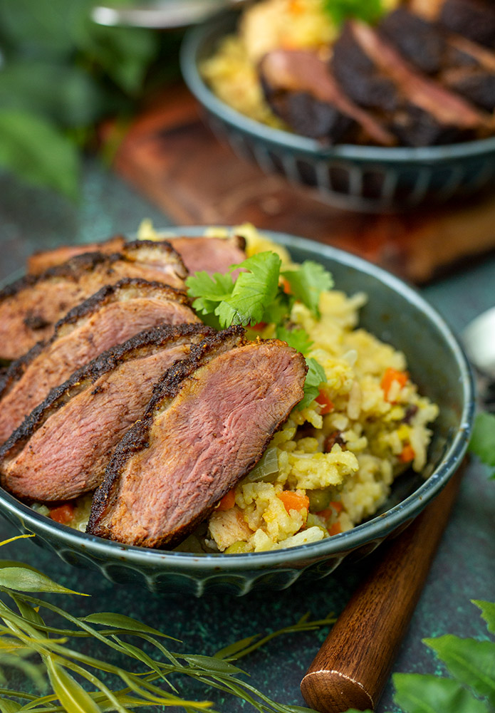

Poultry Pilaf

Description
A key dish from the Legend of Zelda: Breath of the Wild
series includes the Poultry Pilaf as well as it's two relatives, the
Prime and Gourmet versions. While the real life version may not replenish
your heart containers, it can fill you up real quick!
Ingredients
Chicken
- 2 chicken breast, cut into large bite-sized pieces
- 1 cup yogurt
- juice of ½ lemon
- ¼ cup olive oil
- 1 tsp cumin
- 1 tsp garlic powder
- ½ tsp cinnamon
- ½ tsp coriander
- ½ tsp paprika
- ½ tsp black pepper
- 1 tsp salt
Pilaf
- 1 pinch saffron threads
- ¼ cup boiling water
- ½ onion, minced
- 3 garlic cloves, minced
- 2 tbsp butter
- 1 cup basmati rice
- ½ cup medium grain rice
- 2 tsp salt
- 3 ¾ cups chicken broth
- 2 cardamom pods
- 1 cinnamon stick
- ⅓ cup pistachio, roughly chopped
- ½ cup cashews, roughly chopped
- 2 carrots, diced
- 8 ½ oz can of peas
Steps
- Combine the yogurt, lemon, olive oil, cumin, garlic powder, cinnamon, coriander, paprika, black pepper, and salt in a bowl. Add the chicken and mix until all the pieces are fully covered. Cover and let it rest in the refrigerator for at least 1 hour, up to 8 hours.
- Next, we’ll prepare the rice. Place the saffron and boiling water in a cup and allow to steep for 5 minutes. Heat a saucepan with butter over medium heat. Melt the butter and add the onions and cook until translucent. Add the garlic and cook for 2 minutes, until fragrant.
- Add the rice and cook until slightly toasted, about 3 minutes. Add the saffron water, salt, cardamom pods, cinnamon stick, and vegetable broth. Bring to a boil and then reduce the heat to low. Cover and cook until the rice has cooked, about 20 minutes. Set aside.
- To start making the pilaf, heat a pan over medium-high heat. Add the pistachios and cashews and toast slightly. Cook until they just start to brown, about 3-5 minutes. Once toasted, remove from the pan and set aside. In the same pan, add two teaspoons of canola and allow to heat up. Add the carrots and cook until it softens, about 5 minutes.
- Add the cooked rice and peas. Mix well and cook for about 5 minutes. Add the nuts and, once mixed in, transfer to a large bowl. Keep the pan over medium heat.
- Before cooking the chicken, transfer the chicken to a plate and pat dry with a paper towel. You don’t want the chicken to be overly covered with the marinade. Place the chicken in the pan and cook until the chicken is cooked all the way through, about 10 minutes. Transfer to the bowl with the rice and mix together.